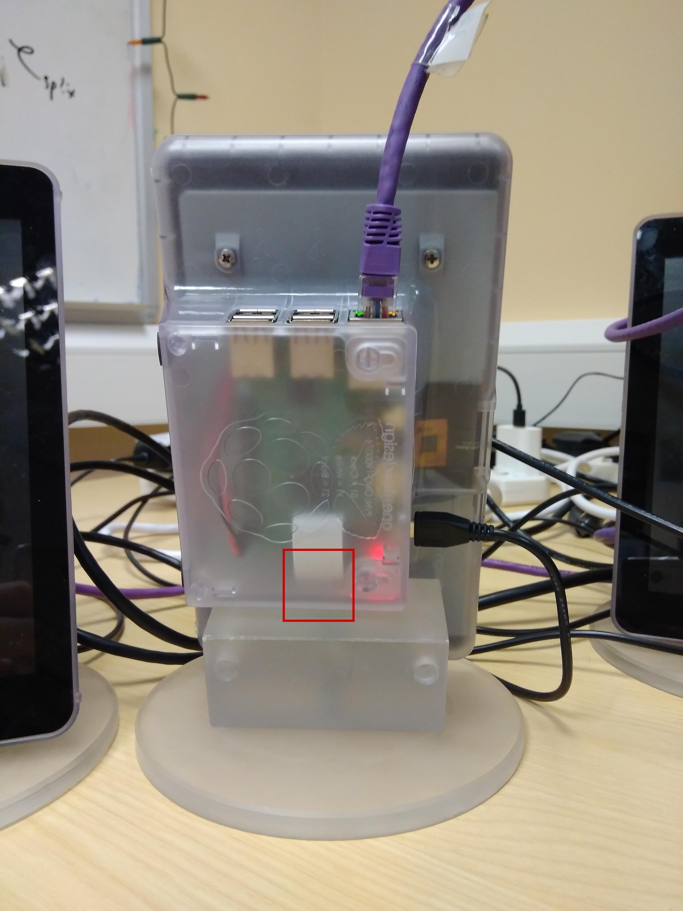

Outreach Raspberry Pis 2
I thought I’d better record some of the stuff I did to address these issues.
Updating Raspian from Jessie to Stretch
This was simply a matter of changing the OS version in the sources files and running an update:
sudo sed -i "s/jessie/stretch/g" /etc/apt/sources.list
sudo sed -i "s/jessie/stretch/g" /etc/apt/sources.list.d/raspi.list
sudo apt update
sudo apt -y dist-upgrade
I also had to say yes or no to some prompts about changing configuration files to the new default or keeping the old customized one.
One of the Pis had a smaller disk than the others.
It was the same one that was broken (see below).
That made updating more difficult as sudo apt -y dist-upgrade did not proceed due to lack of disk space.
My solution was to remove the biggest package, wolfram-engine, then continue as above.
Chromium in kiosk mode
I noticed that right-click menus were appearing when people were playing NuOdyssey at Celebrate Science and that the fullscreen was somehow being exited. These problems can be avoided by running Chromium in kiosk mode, which forces fullscreen always and disables right-click. I made a desktop file to start NuOdyssey in a kiosk mode session of Chromium:
$ cat nuodyssey.desktop
[Desktop Entry]
Type=Application
Terminal=false
Exec=chromium-browser --kiosk localhost
Name=NuOdyssey
Comment=A game about neutrinos
Categories=Education;
and put it on the desktop of the Neutrino Pis.
Changing the password — when you don’t know the password
This was surprisingly easy, as the Pis are set up to run sudo without a password prompt. Simply run:
sudo passwd pi
to get a prompt to set the new password for the user pi.
I have recorded the new password in the outreach document.
Disabling screen blanking
Since we’re using LightDM:
$ cat /etc/X11/default-display-manager
/usr/sbin/lightdm
edit the lightdm configuration file
sudo vim /etc/lightdm/lightdm.conf
and add
xserver-command=X -s 0 dpms
below [Seat:*] to disable screen blanking.
Fixing the dead Pi
One of the Pis stopped coming on when plugged in. The (red) power light came on, so it had power. However, the (green) SD card activity light did not come on, suggesting a problem with the SD card. I dismantled the enclosure to get access to the SD card, which is located as shown by the red square below.

On reseating the card, the Pi started working again. Good old “turn it off and on again”.
Setting hostnames
On most Pis, I noticed sudo was complaining:
sudo: unable to resolve host HOSTNAME
where I have replaced the real hostname with HOSTNAME.
I noticed that /etc/hosts was not correctly configured with the right hostname, so changed it to look like:
$ cat /etc/hosts
127.0.0.1 localhost
::1 localhost ip6-localhost ip6-loopback
ff02::1 ip6-allnodes
ff02::2 ip6-allrouters
127.0.1.1 HOSTNAME
That stopped the error messages.
On the other Pis, the hostname had not been changed from the default. This makes it difficult to distinguish them, especially when accessing them by SSH. To change the hostname, I made the same change as above and also changed the hostname file so that it looked like:
$ cat /etc/hostname
HOSTNAME